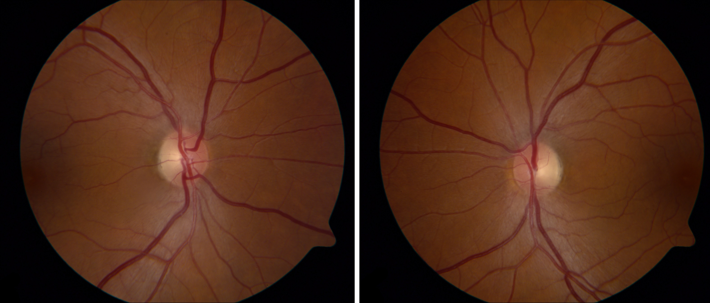

( of )
Correct: 0
Incorrect: 0
A 35 year old man reports slowly progressive vision loss in both eyes of many months’ duration. Visual acuity is 20/200 (6/60, 0.1) in both eyes. There is no afferent pupil defect. Optic discs show mild temporal pallor, but the examination is otherwise normal. These are the visual fields.
What caused these defects?
Incorrect
Correct!
Whenever you encounter this pattern of visual field loss in both eyes, realize that the pathology is an “axonopathy,” and that it is usually caused by toxic, metabolic (including nutritional deficiency), or hereditary conditions. Consider these common causes: ethambutol toxicity, thiamine (B1) and hydroxycobalamin (B12) deficiencies, alcoholism, starvation diets, non-adherence to vitamin supplementation after bariatric surgery, hereditary dominant (OPA 1) and Leber optic neuropathies. This patient admitted to severe alcoholism. Treatment consisted of heavy thiamine dosing and abstinence. Vision is more likely to recover if the patient is adherent to the treatment regimen and if the optic discs have not developed pallor. Hence the importance of early diagnosis, especially in patients taking ethambutol, where scrupulous monitoring of visual acuity and color vision is advisable, so that the medication can be discontinued at the first sign of optic nerve toxicity.

The visual field defects are “cecocentral scotomas” (also called “centrocecal scotomas”) because they affect the visual field that lies between fixation and the physiologic blind spot. The damage is occurring in the UNMYELINATED small axons of the retinal ganglion cells that make up the maculopapillar bundle; the myelinated axons of the other axon bundles are spared. The temporal optic disc pallor reflects relatively severe—and usually irreversible—damage to axons.
Incorrect
Incorrect